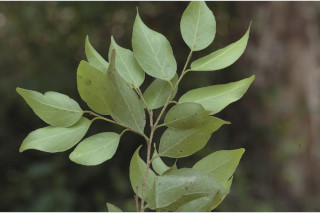
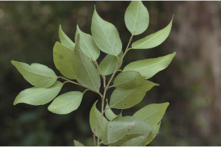
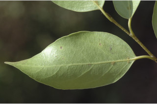
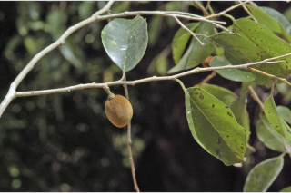
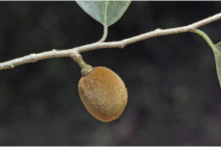
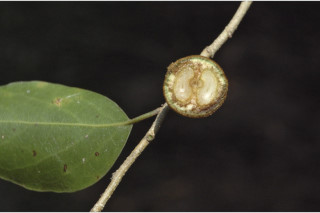
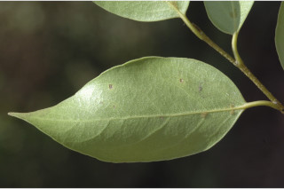
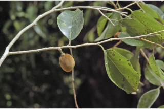
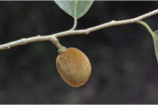
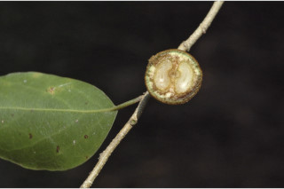

Trees up to 10 m tall.
10 ಮೀ. ಎತ್ತರದವರೆಗೆ ಬೆಳೆಯುವ ಮರಗಳು.
10 മീറ്റര് വരെ ഉയരമുളള മരങ്ങള്.
மரங்கள் 10 மீ. உயரம் வரை வளரக்கூடியது.
Bark grey, peeling off in large flakes; blaze light orange.
ತೊಗಟೆ ಬೂದು ಬಣ್ಣದಲ್ಲಿದ್ದು ದೊಡ್ಡ ಚಕ್ಕೆಗಳ ರೂಪದಲ್ಲಿ ಸುಲಿಯುವ ಮಾದರಿಯಲ್ಲಿರುತ್ತವೆ; ಕಚ್ಚು ಮಾಡಿದ ಜಾಗ ತೆಳು ಕಿತ್ತಳೆ ಬಣ್ಣದಲ್ಲಿರುತ್ತದೆ.
വലിയ അടരുകളായി ഇളകിപ്പോകുന്ന, നരച്ചനിറത്തിലുളള പുറംതൊലി; വെട്ട്പാടിന് ഇളം ഓറഞ്ച് നിറമാണ്.
மரத்தின் பட்டை சாம்பல் நிறமானது, பெரிய செதில்களாக உரியக்கூடியவை; உள்பட்டை வெளிறிய ஆரஞ்சு நிறமானது.
Branchlets brown or greyish, terete, glabrous.
ಕಿರುಕೊಂಬೆಗಳು ಕಂದು ಅಥವಾ ಬೂದು ಬಣ್ಣದಲ್ಲಿದ್ದು ದುಂಡಾಗಿರುತ್ತವೆ ಹಾಗೂ ರೋಮರಹಿತವಾಗಿರುತ್ತವೆ.
അരോമിലമായ തവിട്ട് നിറമോ നരച്ച ചാര നിറമോ ഉളള ഉരുണ്ട ഉപശാഖകള്.
சிறிய நுனிக்கிளைகள் ப்ரவுன் அல்லது சாம்பல் நிறமானது, குறுக்குவெட்டுத் தோற்றத்தில் வளையமானது, உரோமங்களற்றது.
Leaves simple, alternate distichous; stipule caducous; petiole 0.3-0.8 cm long, lamina 5-9 x 2-4 cm, elliptic to ovate, apex acuminate with blunt tip, base asymmetric, margin entire, thinly coriaceous, glabrous; midrib flat above; secondary_nerves 5-7 pairs sometimes with hairy domatia at the axils at least 1 or 2 lower most pairs; tertiary_nerves reticulate.
ಎಲೆಗಳು ಸರಳವಾಗಿದ್ದು ಪರ್ಯಾಯ ಜೋಡನಾ ವ್ಯವಸ್ಥೆಯಲ್ಲಿದ್ದು ಕಾಂಡದ ಎರಡೂ ಕಡೆ ಎದುರು ಬದರಿನ ಲಂಬಸಾಲಿನಲ್ಲಿರುತ್ತವೆ;ಕಾವಿನೆಲೆಗಳು ಅಂಡವೃತ್ತದಿಂದ ಅಂಡಾಕಾರದವರೆಗಿನ ಕಾರದ್ದಲ್ಲಿದ್ದು 0.3 – 0.8 ಸೆಂಮೀ.ಉದುರಿ ಹೋಗುತ್ತವೆ; ಪತ್ರಗಳು 5 - 9 X 2 – 4 ಸೆಂ. ಮೀ. ಗಾತ್ರ, ಅಂಡವೃತ್ತ ದಿಂದ ಅಂಡಾಕಾರದವರೆಗಿನ ಆಕಾರ ಹೊಂದಿರುತ್ತವೆ; ಪತ್ರಗಳ ತುದಿ ಮೊಂಡಾಗ್ರವುಳ್ಳ , ಕ್ರಮೇಣವಾಗಿ ಚೂಪಾಗುವ ಮಾದರಿಯಲ್ಲಿದ್ದು ಬುಡ ಅಸಮವಾಗಿರುತ್ತದೆ. ಅಂಚು ನಯವಾಗಿರುತ್ತದೆ ;ಮೇಲ್ಮೈ ತೆಳು ತೊಗಲನ್ನೋಲುವ ಮಾದರಿಯಲ್ಲಿರುತ್ತದೆ ಮತ್ತು ರೋಮರಹಿತವಾಗಿರುತ್ತದೆ;ಮಧ್ಯನಾಳ ಪತ್ರದ ಮೇಲ್ಭಾಗದಲ್ಲಿ ಚಪ್ಪಟೆಯಾಗಿರುತ್ತದೆ; ಎರಡನೇ ದರ್ಜೆಯ ನಾಳಗಳು 5-7 ಜೋಡಿಗಳಿದ್ದುರುತ್ತವೆ ಕೆಲವು ವೇಳೆ ಕೊನೇ ಪಕ್ಷ ತೀರಾ ತಳದಲ್ಲಿರುವ 1 ಅಥವಾ 2 ನಾಳಗಳ ಅಕ್ಷಾಕಂಕುಳಿನಲ್ಲಿಯಾದರೂ ರೋಮಗಳನ್ನುಳ್ಳ ಸಹಜೀವಿ ಗೂಡುಗಳನ್ನು ಹೊಂದಿರುತ್ತವೆ;ಮೂರನೇ ದರ್ಜೆಯ ನಾಳಗಳು ಜಾಲ ಬಂಧ ನಾಳ ವಿನ್ಯಾಸದಲ್ಲಿರುತ್ತವೆ.
ലഘുവായ ഇലകള്, ഏകാന്തരക്രമത്തില് തണ്ടിന്റെ രണ്ടുഭാഗത്ത് മാത്രമായടുക്കിയതാണ്; അനുപര്ണ്ണങ്ങള് എളുപ്പം ഇളകി വീഴുന്നവയാണ്; ഇലഞെട്ടിന് 0.4 സെ.മീ മുതല് 0.8 സെ.മീ വരെ നീളം; പത്രഫലകത്തിന് 5 സെ.മീ മുതല് 9 സെ.മീ വരെ നീളം; പത്രഫലകത്തിന് 5 സെ.മീ മുതല് 9 സെ.മീ വരെ നീളവും 2 സെ.മീ മുതല് 4 സെ.മീ വരെ വീതിയും, ആകൃതി ദീര്ഘവൃത്തംതൊട്ട് അണ്ഡാകാരം വരെയാകാം. മുനപ്പില്ലാത്ത ദീര്ഘാഗ്രം, പത്രാധാരം അസമമാണ്, അവിഭജിതമായ അരികുകള്, നേര്ത്ത ചര്മ്മില പ്രകൃതം, അരോമിലം; മുകളില് പരന്നിരിക്കുന്ന മുഖ്യസിര; ചിലപ്പോള് ഏറ്റവും താഴത്തെ ജോഡികളിലെങ്കിലും കക്ഷങ്ങളില് രോമിലമായ ഡൊമീഷ്യയുളള 5 മുതല് 7 വരെ ജോഡി ദ്വിതീയ ഞരമ്പുകള്; ജാലിതമായിട്ടുളള ത്രിതീയ ഞരമ്പുകള്.
இலைகள் தனித்தவை, மாற்றுஅடுக்கமானவை, இருநெடுக்கு வரிசையிலையடுக்கம் (டைஸ்டிக்கஸ்); இலையடிச்செதில் எளிதில் உதிரக்கூடியவை; இலைக்காம்பு 0.3-0.8 செ.மீ. நீளமானது; இலை அலகு 5-9 x 2-4 செ.மீ., நீள்வட்டம் முதல் முட்டை வடிவானது, அலகின் நுனி அதிக்கூரியது மற்றும் மழுங்கிய முனை கொண்டது, அலகின் தளம் சமமற்றது, அலகின் விளிம்பு முழுமையானது, மெல்லிய கோரியேசியஸ், உரோமங்களற்றது; மையநரம்பு அலகின் மேற்பரப்பிற்கு சமமானது; இரண்டாம் நிலை நரம்புகள் 5-7 ஜோடிகளுடையது, சிலசமயங்களில் உரோமத்துடன் கூடிய டொமேஸ்சியாவை கோணங்களிலுடையது, குறிப்பாக தளத்திலுள்ள 1 அல்லது 2 நரம்புகளில் டொமேஸ்சியா காணப்படுகின்றன; மூன்றாம் நிலை நரம்புகள் வலைப்பின்னல் கொண்டது.
Flowers unisexual, dioecious, in axillary clusters.
ಹೂಗಳು ಏಕಲಿಂಗಿಗಳಾಗಿರುತ್ತವೆ ಮತ್ತು ಗಂಡು ಮತ್ತು ಹೆಣ್ಣು ಹೂಗಳು ಪ್ರತ್ಯೇಕ ಸಸ್ಯಗಳಲ್ಲಿದ್ದು ಅಕ್ಷಾಕಂಕುಳಿನಲ್ಲಿನ ಗುಚ್ಛಗಳಲ್ಲಿರುತ್ತವೆ .
കക്ഷീയ കൂട്ടങ്ങളിലുണ്ടാകുന്ന പൂക്കള് ഏകലിംഗികളാണ്, ഡയീഷ്യസും.
மலர்கள் ஓர்பாலானவை, ஈரகம் கொண்டவை, இலைக்கோணங்களில் கூட்டமாக காணப்படுகின்றன.
Drupe, densely rufous hirsute, seeds 2.
ಡ್ರೂಪ್ ಫಲಗಳು ದಟ್ಟವಾದ ಕೆಂಗಂದು ಬಣ್ಣದ ಒರಟು ರೋಮಗಳಿಂದ ಕೂಡಿರುತ್ತವೆ ಮತ್ತು 2 ಬೀಜಗಳನ್ನು ಹೊಂದಿರುತ್ತವೆ.
2 വിത്തുവീതമുളള, കനത്തില് റൂഫസ് രോമിലമായ കായ ഡ്രൂപ്പ് ആണ്.
உள்ளோட்டுத்தசைகனி (ட்ரூப்), அடர்த்தியான ப்ரவுன் நிறமான உரோமங்களுடையது, விதைகள் இரண்டு கொண்டவை.
 

 






